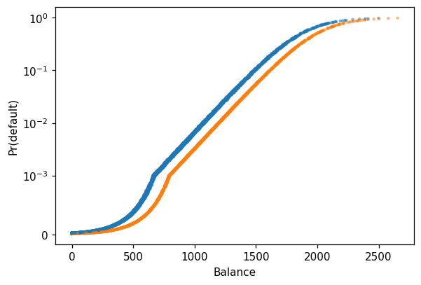
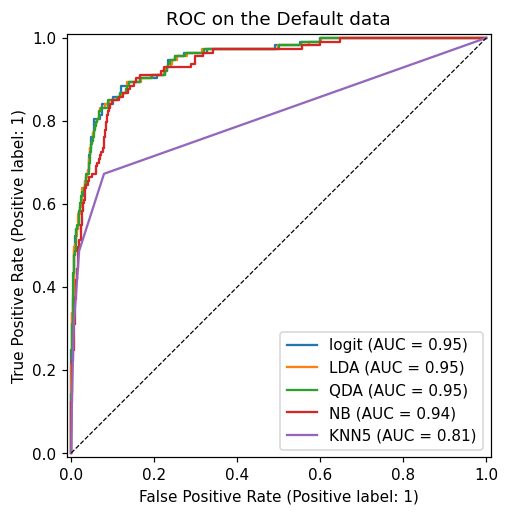
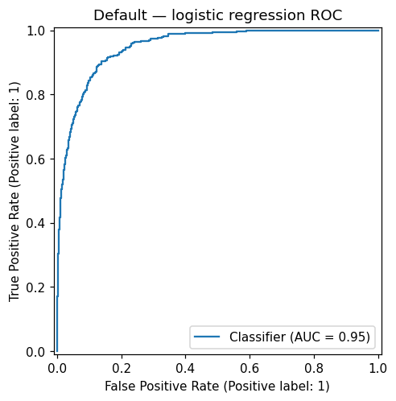

This notebook runs on Colab as-is. The badge link above and the GITHUB_RAW line in the setup cell already point to this repository, so everything installs and loads automatically.
Chapter 4 — Classification¶
Lab: logistic regression, LDA, QDA, naive Bayes, ROC, Poisson¶
Course: Quantitative Research Methods
Instructor: Prof. Dr. Christoph Weisser
Source: James, Witten, Hastie, Tibshirani & Taylor (2023), An Introduction to Statistical Learning, with Applications in Python, Springer. Companion code at statlearning.com.
Goal. Fit five different classifiers on the Default and Smarket data, compare them via confusion matrices and ROC curves, and run a Poisson regression on Bikeshare.
Setup¶
Run this cell once. The ISLP package can be installed with pip install ISLP. As an alternative, the same data sets are available as CSVs in the workspace’s ALL CSV FILES - 2nd Edition folder.
Google Colab: this notebook also runs on Colab out of the box — the setup cell below installs any missing packages and downloads the data automatically.
# --- Setup: runs locally AND on Google Colab --------------------------------
# Silence only the spurious 'encountered in matmul' RuntimeWarnings that the macOS
# Accelerate BLAS emits; real warnings (deprecations, model caveats) stay visible.
import warnings
warnings.filterwarnings('ignore', message='.*encountered in matmul', category=RuntimeWarning)
import importlib.util, os, subprocess, sys
IN_COLAB = 'google.colab' in sys.modules
def _ensure(pkg, import_name=None):
"""pip-install pkg (quietly) if its import is missing."""
if importlib.util.find_spec(import_name or pkg) is None:
subprocess.run([sys.executable, '-m', 'pip', 'install', '-q', pkg], check=False)
if IN_COLAB: # Colab ships numpy/pandas/sklearn/statsmodels; add course extras
for _pkg, _imp in [('ISLP', 'ISLP')]:
_ensure(_pkg, _imp)
import numpy as np
import pandas as pd
import matplotlib.pyplot as plt
rng = np.random.default_rng(2024)
plt.rcParams['figure.dpi'] = 110
try:
from ISLP import load_data
HAVE_ISLP = True
except ImportError:
HAVE_ISLP = False
print('ISLP not installed; using CSV / URL fallbacks.')
# Local CSV location (repo layout first, then legacy paths, then a data/ cache).
_CANDIDATES = ['../ALL CSV FILES - 2nd Edition',
'ALL CSV FILES - 2nd Edition',
'../../ALL CSV FILES - 2nd Edition', 'data']
CSV = next((p for p in _CANDIDATES if os.path.isdir(p)), 'data')
# GITHUB_RAW lets a fresh Colab runtime fetch any
# CSV that is neither in ISLP nor already local (spaces in the folder -> %20).
GITHUB_RAW = ('https://raw.githubusercontent.com/ChrisW09/Quantitative-Research-Methods/main/'
'ALL%20CSV%20FILES%20-%202nd%20Edition')
# The four datasets NOT in the ISLP package -> load from the book's official
# site so the notebook works on a fresh Colab even before the repo is published.
KNOWN_URLS = {
'Advertising': 'https://www.statlearning.com/s/Advertising.csv',
'Heart': 'https://www.statlearning.com/s/Heart.csv',
'Income1': 'https://www.statlearning.com/s/Income1.csv',
'Income2': 'https://www.statlearning.com/s/Income2.csv',
}
def load(name, **read_csv_kwargs):
"""Load a course dataset. Order: ISLP package -> R datasets -> local CSV
-> official book URL -> your GitHub repo. Works locally and on Colab."""
if HAVE_ISLP:
try:
return load_data(name)
except Exception:
pass
if name == 'USArrests': # classic R dataset, not in ISLP
try:
import statsmodels.api as sm
return sm.datasets.get_rdataset('USArrests', 'datasets').data
except Exception:
pass
path = f'{CSV}/{name}.csv'
if os.path.exists(path): # running from the repo (local)
return pd.read_csv(path, **read_csv_kwargs)
remotes = ([KNOWN_URLS[name]] if name in KNOWN_URLS else []) + [f'{GITHUB_RAW}/{name}.csv']
for url in remotes: # fresh Colab: stream over https
try:
return pd.read_csv(url, **read_csv_kwargs)
except Exception:
continue
raise FileNotFoundError(
f"Could not load {name!r}. Put the CSV in '{CSV}/' or check your connection for the GITHUB_RAW fallback.")
1. Logistic regression¶
Fitted as a GLM with the binomial family, which is logistic regression written in its natural home. The coefficients live on the log-odds scale:
so a one-unit rise in \(X_j\) adds \(\beta_j\) to the log-odds and multiplies the odds by \(e^{\beta_j}\). Nothing is additive in the probability itself — which is why the fitted curve in the next plot is an S and not a line, and why “the effect of balance on default” has no single numerical answer.
import statsmodels.api as sm
Default = load('Default')
y = (Default['default'] == 'Yes').astype(int)
Default['student_d'] = (Default['student'] == 'Yes').astype(int)
X = sm.add_constant(Default[['balance', 'income', 'student_d']])
res = sm.GLM(y, X, family=sm.families.Binomial()).fit()
print(res.summary())
Generalized Linear Model Regression Results
==============================================================================
Dep. Variable: default No. Observations: 10000
Model: GLM Df Residuals: 9996
Model Family: Binomial Df Model: 3
Link Function: Logit Scale: 1.0000
Method: IRLS Log-Likelihood: -785.77
Date: Tue, 04 Aug 2026 Deviance: 1571.5
Time: 19:10:54 Pearson chi2: 7.00e+03
No. Iterations: 9 Pseudo R-squ. (CS): 0.1262
Covariance Type: nonrobust
==============================================================================
coef std err z P>|z| [0.025 0.975]
------------------------------------------------------------------------------
const -10.8690 0.492 -22.079 0.000 -11.834 -9.904
balance 0.0057 0.000 24.737 0.000 0.005 0.006
income 3.033e-06 8.2e-06 0.370 0.712 -1.3e-05 1.91e-05
student_d -0.6468 0.236 -2.738 0.006 -1.110 -0.184
==============================================================================
Reading the output. student_d flips sign once balance is held constant — the textbook’s student paradox, and the clearest confounding example in the course.
Both statements are true simultaneously: students default more often than non-students overall, and a student is less likely to default than a non-student carrying the same balance. The resolution is that students carry higher balances, so the marginal comparison is contaminated by balance. The sign of a coefficient answers only the conditional question, and reporting it as though it answered the marginal one is how this mistake reaches a slide deck.
Predicted probabilities¶
p = res.predict(X)
fig, ax = plt.subplots(figsize=(6, 4))
ax.scatter(Default['balance'], p, s=4, alpha=0.4,
c=Default['student_d'].map({0: 'C0', 1: 'C1'}))
ax.set(xlabel='Balance', ylabel='Pr(default)')
ax.set_yscale('symlog', linthresh=1e-3); plt.show()

2. LDA, QDA, naive Bayes, KNN — head-to-head¶
Five classifiers on one split. They differ only in what they assume about the class-conditional distributions:
logit models \(p(Y\mid X)\) directly and assumes nothing about \(X\);
LDA assumes Gaussian predictors with a shared covariance matrix, giving a linear boundary;
QDA lets each class keep its own covariance, giving a quadratic one;
naive Bayes assumes the predictors are independent within each class;
KNN assumes nothing at all, and pays for it in variance.
The scaler is fitted on the training split only, and matters here for exactly one of the five: KNN is the only method whose answer depends on the units of balance and income.
from sklearn.model_selection import train_test_split
from sklearn.preprocessing import StandardScaler
from sklearn.linear_model import LogisticRegression
from sklearn.discriminant_analysis import (
LinearDiscriminantAnalysis as LDA,
QuadraticDiscriminantAnalysis as QDA)
from sklearn.naive_bayes import GaussianNB
from sklearn.neighbors import KNeighborsClassifier
from sklearn.metrics import classification_report, roc_auc_score
X = Default[['balance', 'income', 'student_d']].values
y = (Default['default'] == 'Yes').astype(int).values
Xtr, Xte, ytr, yte = train_test_split(X, y, test_size=0.3, random_state=0)
scaler = StandardScaler().fit(Xtr)
Xtr_s, Xte_s = scaler.transform(Xtr), scaler.transform(Xte)
models = {
'logit': LogisticRegression(max_iter=2000),
'LDA': LDA(),
'QDA': QDA(),
'NB': GaussianNB(),
'KNN5': KNeighborsClassifier(n_neighbors=5),
}
for name, mdl in models.items():
mdl.fit(Xtr_s, ytr)
proba = mdl.predict_proba(Xte_s)[:, 1]
print(f'{name:6s} AUC = {roc_auc_score(yte, proba):.3f}')
logit AUC = 0.946
LDA AUC = 0.946
QDA AUC = 0.946
NB AUC = 0.935
KNN5 AUC = 0.811
Reading the output. Logistic regression, LDA and QDA are indistinguishable at AUC 0.946, naive Bayes is slightly behind at 0.935, and KNN with \(K=5\) trails badly at 0.811.
The tie at the top is the informative part. On these three predictors the true boundary is close to linear, so QDA’s extra flexibility buys nothing and LDA’s Gaussian assumption costs nothing — when a simpler model is adequate, more flexible ones do not beat it, they merely match it with more variance. KNN’s failure is different in kind: with 3.33% positives, the five nearest neighbours of almost any customer are all non-defaulters, so it can barely rank the rare class at all. That is the curse of dimensionality arriving in the form of class imbalance.
ROC curves¶
from sklearn.metrics import RocCurveDisplay
fig, ax = plt.subplots(figsize=(5, 5))
for name, mdl in models.items():
RocCurveDisplay.from_estimator(mdl, Xte_s, yte, ax=ax, name=name)
ax.plot([0, 1], [0, 1], 'k--', lw=0.8)
ax.set_title('ROC on the Default data'); plt.show()

4. The threshold is a business decision, not a statistical one¶
The deck lists “tune the threshold to your loss function” as an objective, and it is the step most easily skipped: predict() silently uses 0.5. On data where only 3.33% of customers default, that default is close to indefensible, and AUC 0.946 does nothing to protect you from it — AUC is threshold-free, so a model can rank beautifully and still flag almost nobody.
from sklearn.metrics import confusion_matrix, roc_curve
proba = models['logit'].predict_proba(Xte_s)[:, 1]
def report(threshold, label):
pred = (proba >= threshold).astype(int)
tn, fp, fn, tp = confusion_matrix(yte, pred).ravel()
sens = tp / (tp + fn) # of the true defaulters, how many did we catch?
spec = tn / (tn + fp) # of the safe customers, how many did we leave alone?
prec = tp / (tp + fp) if tp + fp else float('nan')
print(f'{label:<26} t={threshold:.2f} TP={tp:>3} FN={fn:>3} FP={fp:>3} TN={tn:>4} '
f'sens={sens:.3f} spec={spec:.3f} prec={prec:.3f}')
report(0.50, 'sklearn default')
# Lowest threshold that catches at least 80% of defaulters.
fpr, tpr, thresholds = roc_curve(yte, proba)
t80 = thresholds[np.argmax(tpr >= 0.80)]
report(t80, 'tuned for 80% recall')
print(f'\nAUC is unchanged either way: {roc_auc_score(yte, proba):.3f}')
print(f'base rate in the test split: {yte.mean():.3%}')
sklearn default t=0.50 TP= 39 FN= 74 FP= 9 TN=2878 sens=0.345 spec=0.997 prec=0.812
tuned for 80% recall t=0.10 TP= 91 FN= 22 FP=160 TN=2727 sens=0.805 spec=0.945 prec=0.363
AUC is unchanged either way: 0.946
base rate in the test split: 3.767%
Reading the output. At \(t = 0.5\) the model catches 39 of 113 defaulters — sensitivity 0.345 against specificity 0.997. Accuracy would look excellent, but only because 96.2% of this test split never defaults; predicting “nobody defaults” would score higher still. Dropping to \(t = 0.10\) lifts sensitivity to 0.805, and precision falls from 0.812 to 0.363 — nearly two thirds of flagged customers never default.
AUC is identical in both rows. It has to be: the ranking never changed, only where the line was drawn across it. So the choice is not a modelling question at all, it is the bank’s — what does a missed default cost relative to hassling a good customer? A lender with a cheap intervention wants the low threshold; one whose only action is closing the account does not. Chapter 4’s real deliverable is the ranking, plus an explicit statement of the loss that turns it into a decision.
5. Exercises¶
Tune the threshold on the logistic regression to maximise balanced accuracy on the test set.
Fit logistic regression on
Smarketand report the classification rate on 2005 data only.Compare AUCs after standardising vs. not standardising. Which models are sensitive?
Add an
hr(hour) factor to the Bikeshare Poisson model and interpret the resulting coefficients.
Lecture exercises — worked Python solutions¶
Runnable, verified solutions to the three [Python]-tagged exercises in the Chapter 4 lecture deck. Each cell uses the load() helper from the Setup cell above (no hard-coded paths), and the reported numbers match the slide solutions.
Extended Exercise 4.5 — Default: logistic, confusion, ROC/AUC [Python]¶
Using the Default data: (1) fit a logistic regression of default on balance, income and a 0/1 student indicator; (2) build the confusion matrix at thresholds 0.5 and 0.2; (3) at each threshold report accuracy, sensitivity, specificity and precision; (4) plot the ROC curve and report the AUC.
# Extended Exercise 4.5 — Default: logistic regression, confusion matrix, ROC/AUC
from sklearn.linear_model import LogisticRegression
from sklearn.metrics import confusion_matrix, roc_auc_score, RocCurveDisplay
Default = load('Default') # setup-cell helper (ISLP -> CSV)
y = (Default['default'] == 'Yes').astype(int) # encode response as 0/1
X = Default.assign(stud=(Default['student'] == 'Yes').astype(int)
)[['balance', 'income', 'stud']].values # predictors incl. student dummy
clf = LogisticRegression(max_iter=10000).fit(X, y) # fit by (penalised) maximum likelihood
proba = clf.predict_proba(X)[:, 1] # predicted P(default = Yes) per customer
# metrics at two decision thresholds (sklearn orders cells as TN, FP, FN, TP)
print(f"{'t':>4} {'TN':>5} {'FP':>4} {'FN':>4} {'TP':>4} {'acc':>5} {'sens':>5} {'spec':>5} {'prec':>5}")
for t in (0.5, 0.2):
tn, fp, fn, tp = confusion_matrix(y, proba > t).ravel()
sens, spec = tp/(tp+fn), tn/(tn+fp) # sensitivity, specificity
prec, acc = tp/(tp+fp), (tp+tn)/len(y) # precision, accuracy
print(f"{t:>4} {tn:>5} {fp:>4} {fn:>4} {tp:>4} "
f"{acc:>5.3f} {sens:>5.3f} {spec:>5.3f} {prec:>5.3f}")
print('AUC =', round(roc_auc_score(y, proba), 3)) # threshold-free ranking quality
RocCurveDisplay.from_predictions(y, proba) # draw the ROC curve
plt.title('Default — logistic regression ROC'); plt.show()
# Expected output (matches slide Extended Exercise 4.5):
# t TN FP FN TP acc sens spec prec
# 0.5 9627 40 228 105 0.973 0.315 0.996 0.724
# 0.2 9390 277 130 203 0.959 0.610 0.971 0.423
# AUC = 0.95
t TN FP FN TP acc sens spec prec
0.5 9627 40 228 105 0.973 0.315 0.996 0.724
0.2 9390 277 130 203 0.959 0.610 0.971 0.423
AUC = 0.95

At threshold 0.5 the model is accurate (97.3%) but has low sensitivity (0.315) — it misses about two-thirds of true defaulters, the always-predict-No trap on imbalanced data. Lowering the threshold to 0.2 nearly doubles sensitivity (0.610) at the cost of specificity (0.996 → 0.971) and precision (0.724 → 0.423): more false alarms. The AUC (0.95) is threshold-free — it measures ranking quality across all cutoffs, so it is unchanged by the threshold. Choose the operating point by the bank’s relative cost of a missed defaulter (FN) versus a false alarm (FP).
Exercise 4.10 — Logistic regression + confusion matrix in Python [Python]¶
Using the Default data: (1) fit logistic regression of default on balance, income and a 0/1 student indicator; (2) produce the confusion matrix at thresholds 0.5 and 0.2; (3) report the sensitivity at each threshold and interpret the trade-off. (Same fitted model as Extended Exercise 4.5.)
# Exercise 4.10 — confusion matrix and sensitivity at two thresholds.
# Reuses y and proba from the Extended Exercise 4.5 fit above (identical Default model).
for t in (0.5, 0.2): # default and lowered cutoff
tn, fp, fn, tp = confusion_matrix(y, proba > t).ravel() # order: TN, FP, FN, TP
sens = tp / (tp + fn) # sensitivity = TP / actual positives
print(f't={t}: TN={tn} FP={fp} FN={fn} TP={tp} sens={sens:.3f}')
# Expected output (reproducible slide numbers; identical to Extended Exercise 4.5):
# t=0.5: TN=9627 FP=40 FN=228 TP=105 sens=0.315
# t=0.2: TN=9390 FP=277 FN=130 TP=203 sens=0.610
t=0.5: TN=9627 FP=40 FN=228 TP=105 sens=0.315
t=0.2: TN=9390 FP=277 FN=130 TP=203 sens=0.610
At the default threshold 0.5 the model is accurate overall but low-sensitivity (0.315): it misses most true defaulters, exactly as LDA does on this data. Dropping the threshold to 0.2 roughly doubles sensitivity (0.610) by flagging more customers, at the cost of more false positives (FP 40 → 277, so lower specificity). The right threshold depends on the bank’s relative cost of a missed defaulter versus a false alarm. sklearn’s confusion_matrix orders cells as [[TN, FP], [FN, TP]].
Extended Exercise 4.6 — Predicting market direction out-of-sample [Python]¶
Using the Weekly data (weekly S&P 500 returns 1990–2010; Direction is Up/Down): (1) fit logistic regression of Direction on Lag1–Lag5 and Volume on the full data — report in-sample accuracy and the confusion matrix; (2) an honest out-of-sample test — train on Year ≤ 2008, test on 2009–2010, using Lag2 only — reporting test accuracy and confusion matrix for logistic regression and LDA; (3) compare with the naive always predict Up baseline.
# Extended Exercise 4.6 — market direction: in-sample vs honest out-of-sample
from sklearn.linear_model import LogisticRegression
from sklearn.discriminant_analysis import LinearDiscriminantAnalysis as LDA
from sklearn.metrics import accuracy_score, confusion_matrix
wk = load('Weekly') # setup-cell helper (ISLP -> CSV)
yw = (wk['Direction'] == 'Up').astype(int) # encode Up = 1, Down = 0
lags = ['Lag1', 'Lag2', 'Lag3', 'Lag4', 'Lag5', 'Volume']
# (1) in-sample logistic regression on all predictors (optimistic: fit and score on all data)
full = LogisticRegression(max_iter=10000).fit(wk[lags], yw)
print('(1) in-sample acc:', round(full.score(wk[lags], yw), 3))
print(' confusion [[TN,FP],[FN,TP]]:')
print(confusion_matrix(yw, full.predict(wk[lags])))
# (2) honest split: train Year <= 2008, test 2009-2010, using Lag2 as the only predictor
tr, te = wk['Year'] <= 2008, wk['Year'] >= 2009 # boolean train/test masks
for nm, mdl in [('logit', LogisticRegression(max_iter=10000)), ('LDA', LDA())]:
mdl.fit(wk.loc[tr, ['Lag2']], yw[tr]) # fit on <= 2008
pred = mdl.predict(wk.loc[te, ['Lag2']]) # predict 2009-2010
print(f'(2) {nm:5s}: acc={accuracy_score(yw[te], pred):.3f} '
f'TN FP FN TP = {confusion_matrix(yw[te], pred).ravel()}')
# (3) naive baseline: always predict 'Up'
print('(3) always-Up baseline acc:', round((yw[te] == 1).mean(), 3),
f'(n_test = {int(te.sum())})')
# Expected output (matches slide Extended Exercise 4.6):
# (1) in-sample acc: 0.561 ; confusion [[ 54 430],[ 48 557]]
# (2) logit: acc=0.625 TN FP FN TP = [ 9 34 5 56]
# LDA : acc=0.625 TN FP FN TP = [ 9 34 5 56]
# (3) always-Up baseline acc: 0.587 (n_test = 104)
(1) in-sample acc: 0.561
confusion [[TN,FP],[FN,TP]]:
[[ 54 430]
[ 48 557]]
(2) logit: acc=0.625 TN FP FN TP = [ 9 34 5 56]
(2) LDA : acc=0.625 TN FP FN TP = [ 9 34 5 56]
(3) always-Up baseline acc: 0.587 (n_test = 104)
The full-data model reaches only 56.1% and predicts Up almost always (430 + 557 of 1089 rows) — the apparent edge is mostly the market’s upward drift, and it is optimistic because it is in-sample. Out-of-sample (2009–2010), logistic regression and LDA give the identical 62.5% and confusion matrix (they are near-identical linear classifiers): they catch 56/61 up-weeks (sensitivity 0.92) but only 9/43 down-weeks (specificity 0.21). The always predict Up baseline already scores 58.7%, so the models beat it only marginally. Weekly returns are close to a random walk — the lagged predictors carry almost no signal — which is why market-direction prediction is so hard once transaction costs are included.